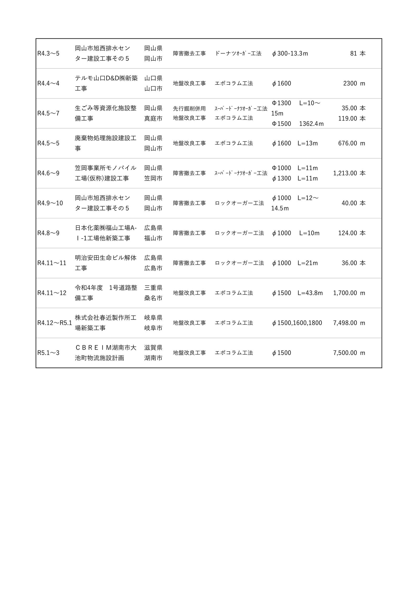

| R2/05 ～ R2/07 | ミツトヨ広島志和地区第1工場新築工事 | 広島県 東広島市 | エポコラム工法 | 地盤改良 2377m |
| R2/05 ～ R2/06 | テキスタイル物流株式会社新築工事 | 岡山県 倉敷市 | エポコラム工法 | 地盤改良 4190m |
| R2/04 ～ R2/05 | 小倉拘置支所庁舎等新営(建築)工事 | 福岡県 北九州市 | エポコラム工法 | 地盤改良 3469m |
| R2/03 ～ R2/05 | 井原浄化センター建設工事 | 岡山県 井原市 | エポコラム工法 | 地盤改良 3973m |
| R2/02 ～ R2/03 | 岡山環状南道路大福地区第5改良工事 | 岡山県 岡山市 | エポコラム工法 | 地盤改良 857m |
| R2/02 ～ R2/02 | 医療法人茜会 昭和病院移転新築工事 | 山口県 下関市 | エスミック・スラリー工法 | 地盤改良 1001m |
| R2/02 ～ R2/03 | (仮称)広島西飛行場跡地造成工事 | 広島市 西区 | エスミコラム工法 | 地盤改良 2915m |
| R1/12 ～ R2/01 | 帝人ファーマ医薬第2工場保冷倉庫設置工事 | 山口県 岩国市 | MAGNUM工法 | 杭工事 φ4050 l=33m 21set |
| R1/10 ～ R2/02 | 三洋電機徳島工場津波液状化対策工事 | 徳島県 板野郡 | CDM工法 | 地盤改良 8553m |